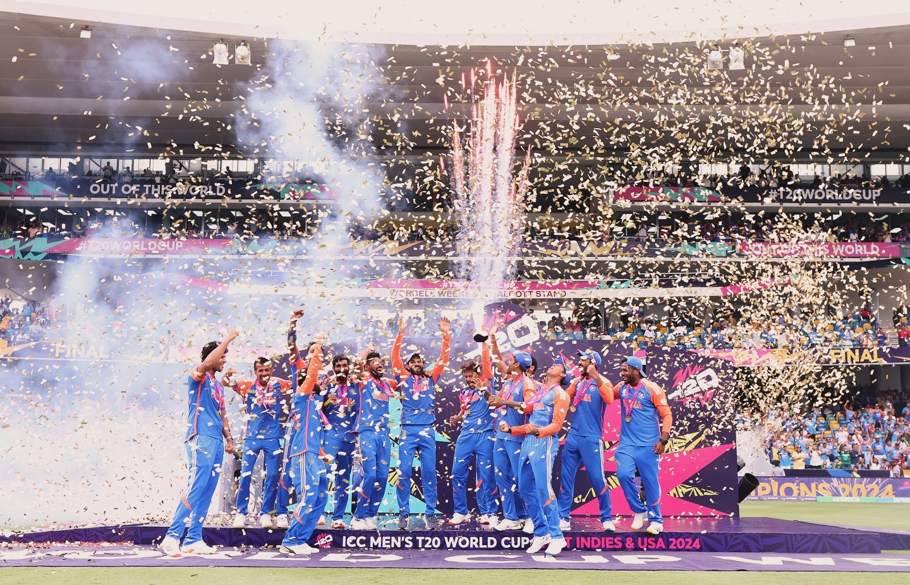

A Legacy of Excellence
Cricket in India is not merely a sport; it's a way of life. From the bustling streets of Mumbai to the serene villages of Punjab, cricket unites millions of hearts.
Indian cricket started in 1932 with its first Test match against England. The turning point came in 1983 when India won its first World Cup under Kapil Dev's leadership.